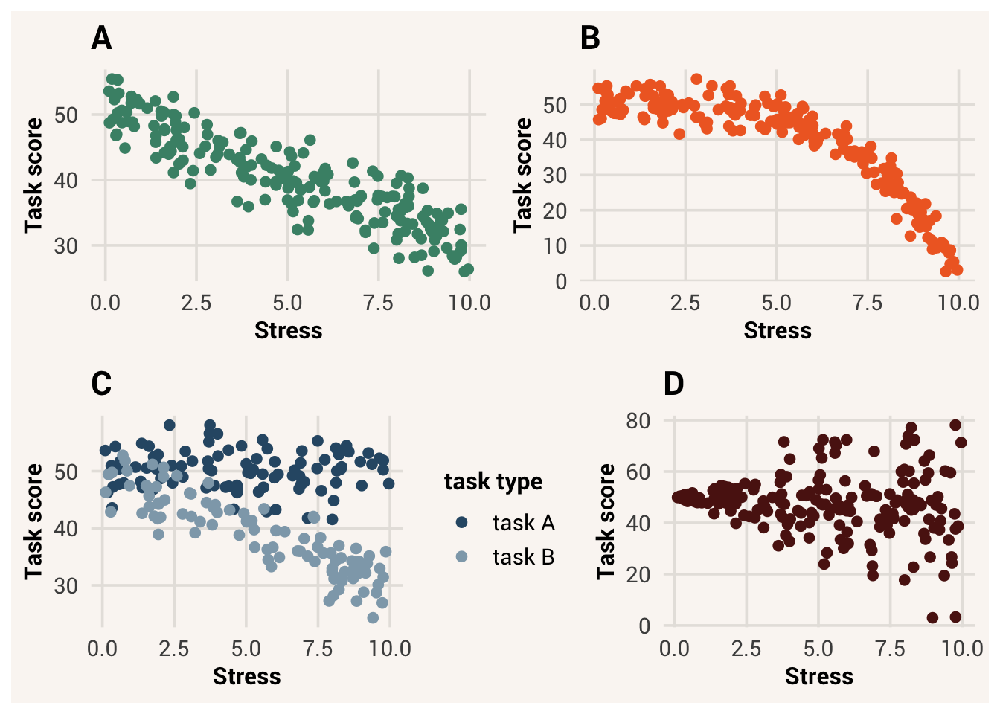
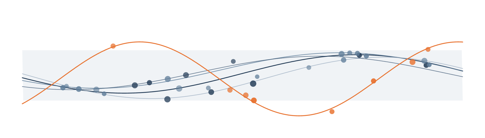

9 Modeling the Data Generation Process

Last chapter we learned about the data generating process. If we know something’s data generating process, that means we know what information goes into the generation process, how that information is processed, and what kind of outputs will happen. We practiced defining our own data generation processes and simulating data based on those… but simulated data is not real data. Rather than create data from a data generation process we already know, how do we find out the data generation process for data we’ve collected from the real world?
Unfortunately it is possible for the same data to come from different data generation processes, and for the same data generation process to produce different data (as we saw with the probabilistic sampling last chapter). It is also possible, in fact almost guaranteed, that the true data generation process for our data is something complicated. Thus it is difficult to answer important “how” and “why” questions (group behavior, disease progression, climate evolution, etc.) when all we have is some data as snapshots of the process’ output.
A dominant method for addressing this conundrum is, rather than expecting some data to tell us what caused it, we write down what we think the data generation process is. Our idea of the data generation process is called a statistical model. Then we compare the data that could come out of such a process to the data we actually have, and see how much they agree. If there is a good match, we have a good idea of the data generation process1. If they don’t match, we think of new ideas and try those next.
statistical model = a mathematical representation of one’s core ideas about a data generation process
This process of formally writing down and testing ideas of the data generation process is called statistical modeling. In this chapter, we will discuss what this process looks like in more detail.
9.1 Creating a statistical model
When you were growing up, did you ever play with toy versions of something? Maybe a firetruck or a dollhouse. These toys were not actual emergency vehicles or buildings. They weren’t the same size and probably had fewer details. However, they resembled the real thing - they looked similar, had the most important features like wheels or a bedroom, and could perform typical actions like rolling or opening a door. These toys were models of something else. They efficiently represented the essence of what makes a firetruck or a house even if they weren’t an exact replica.
As we can build physical models of concrete things, we can also build conceptual models of abstract things like a data generation process. When we wrote down the three components of a data generation process last chapter, we were writing our ideas about the essential mechanisms for how that process works.
In Chapter 8 we knew the actual data generation process because we made it up. But for real data, we can still write down what we think is the data generation process. This might not be as detailed as the actual data generation process, but we hope that it captures the fundamental data generation mechanisms. In other words, we are creating a model of the data generation process and aiming to make it a good one. If we succeed, we can use the model to make reasonable predictions about future data and to explain what we are studying.
Let’s see what this model creation process might look like in a hypothetical research project. Imagine we are interested in education and what influences the level of education a person attains. We can find information about this in The General Social Survey (GSS), which is an extensive and long-running annual survey run by the National Opinion Research Center at the University of Chicago to assess demographics, attitudes, and behaviors in the U.S. For this demonstration, we’ve saved a portion of the data to a file called GSS.csv.
There’s a variable in this dataset called highest_year_of_school_completed, which sounds like the sort of target variable we are interested in. Let’s look at this variable more closely to see what sorts of values it has.
TipExercise
Plot a histogram of the highest_year_of_school_completed variable and calculate a summary (mean and standard deviation).
TipReveal the answer
ggplot(gss, aes(x=highest_year_of_school_completed)) + geom_histogram() mean(gss$highest_year_of_school_completed, na.rm=TRUE) sd(gss$highest_year_of_school_completed, na.rm=TRUE)
According to this quick summary, the average person in the dataset has completed some amount of college education (13.73 years of education). There is quite a bit of variation though, so it stands to reason that there could be factors about a person that influences how much education they completed.
This is when we start thinking about the potential data generation process. First, we need to make a guess about the first component of the data generation process - what information goes into the process. What might influence how much schooling someone finishes? Or, if we don’t want to think about causes just now, what other information might offer clues about education attainment? Let’s say that we have a theory about parental investment being important for academic achievement, and we think people with more siblings will have gotten less parental attention and thus pursue less education. If we do a visual check of these variables together:
TipExercise
Plot a jitter plot of number_of_brothers_and_sisters on the x-axis and highest_year_of_school_completed on the y-axis.
TipReveal the answer
ggplot(gss, aes(x=number_of_brothers_and_sisters, y=highest_year_of_school_completed)) + geom_jitter()
It does seem like number of siblings could be an explanatory variable of education attainment, even if not a very strong one. Put another way, if we look at how the dots cluster on the y-axis for each value on the x-axis, it looks like the clusters are shifting downward slightly - the conditional distribution of highest_year_of_school_completed is changing as a function of number_of_brothers_and_sisters.
Next, we decide on the second component of the data generation process - how the input information is transformed to generate an output, aka the systematic component. This step is tricky! We saw visually that the conditional distribution \(P(Y|X)\) was changing, but how much and in what way? Let’s start with a really basic systematic component, where the the value of the output directly maps to a number of siblings: \(output = -X\).
Lastly, we pick what kind of data is generated by the data generation process. Recall from Chapter 8 that if our process is deterministic, this will be an exact value generated by the systematic component: e.g. \(Y = X\). If our process is probabilistic, however, the output is a probability distribution from which observed data points are sampled (being exact, the output of the systematic component is a parameter of the conditional probability distribution). This is probably the case for our educational attainment variable - it is unlikely to be fully determined by number of siblings. If so, we need to pick a kind of probability distribution. Years of education has an interval scale of measurement and we saw in the histogram above that some education levels are more likely that others, so let’s assume a normal conditional probability distribution for highest_year_of_school_completed and that the systematic component is determining the most likely value of this target, conditional on number_of_brothers_and_sisters.
We’ve decided the systematic component of our model should determine the mean of the conditional probability distribution of our target, but how wide or narrow should that distribution be? Another tricky decision. Let’s pick a standard deviation of 5 for now and see how that goes. In other words, we expect the most likely value of highest_year_of_school_completed to change as a function of number_of_brothers_and_sisters, but we also expect a lot of variation in what the actual observations will turn out to be.
9.2 Mathematical notation for data generation processes
It’s a lot of words to talk about the components of the data generation process - set of input information, how to combine that information, and what kind of data is generated. Because of this, there are again mathematical standards to efficiently notate each piece we are talking about.
9.2.1 Notating the target probability distribution
There are different families of probability distributions, each with one or more parameters whose values specify the exact shape of the distribution. Notation of the probability distribution that generates target data needs to include all this information.
If we want to notate that we are talking about a Bernoulli distribution, we write:
\[Bernoulli(p) \tag{9.1}\]
The name at the beginning of the term specifies the distribution family. The letter in the parentheses is the parameter that affects how a distribution in that family is shaped (\(p\) stands for proportion). If you refer to a probability distribution as \(Bernoulli(0.5)\), what you are saying is this data generation process will create data of one of two values, with a proportion/probability of the first value being 0.5.
When we say observations are being sampled from this probability distribution, we write that fully as:
\[Y \sim Bernoulli(0.5) \tag{9.2}\]
This equation is known as the observation model, because it describes how observations are realized from parameters generated by the systematic component. You should read this equation to mean “the variable Y is sampled from a Bernoulli distribution with a probability of 0.5.” The tilde symbol \(\sim\) is read as “is sampled from” or “is distributed as”. This is different than how we would notate a deterministic data generation process, e.g.:
observation model = the part of a data generation process that specifies how observed values are generated from latent parameter(s)
\[Y = 5 + 2X \tag{9.3}\]
When there’s an equal sign, the value of \(Y\) is exactly determined by whatever is on the right side of the equation. When there’s a tilde, we are saying the value of \(Y\) is probabilistically drawn from whatever is on the right side.
If we are talking about a uniform distribution instead (continuous values of even probability), we notate that family as:
\[U(min, max) \tag{9.4}\]
Where \(U\) is short for “uniform”. To sample data from a probability distribution \(U(0,5)\) means the data will have a uniform distribution with a minimum value of 0 and a maximum value of 5.
A normal probability distribution is notated as:
\[\mathcal{N}(\mu, \sigma) \tag{9.5}\]
The shape of a normal distribution is determined by a mean value and standard deviation. We traditionally use the Greek letters \(\mu\) (“mu”, pronounced “mew”) and \(\sigma\) (sigma, pronounced “sig-ma”) to represent the mean and standard deviation parameters of the normal probability distribution, respectively. In Chapter 5 we said that the mean of a distribution is notated as \(\bar{x}\) and the standard deviation as \(s\), and that’s true of those summaries of a data distribution. Using \(\mu\) and \(\sigma\) to notate the mean and standard deviation as parameters of a probability distribution helps us keep these ideas separate, since they won’t always be the same due to randomness.
Knowing this notation standard, we can turn our verbal description of the probability distribution for highest_year_of_school_completed into a more efficient mathematical equation. We’d write that we expect \(Y \sim \mathcal{N}(\mu, 5)\), where \(\mu\) is a free parameter that can change based on the systematic component.
9.2.2 Notating the systematic component
We can notate the data generation process of a target variable with just an observation model like \(\mathcal{N}(13, 5)\) if we don’t think anything influences the value of the parameters. I.e., this would be how we would specify a description of the marginal distribution \(P(Y)\). But if we want to indicate that the parameters should change based on other information, we need to add additional notation. Specifically, we write another equation that determines how the parameter value should be calculated.
For our current data generation process idea, with a simple transform of the value ofnumber_of_brothers_and_sisters into the likely value for education with a decreasing trend, we’d write:
\[\mu = -X \tag{9.6}\]
This equation specifies the systematic component, which encodes how \(X\) exerts influence. The product of this component is some parameter, specifically \(\mu\) of the normal probability distribution we chose for the observation model. Notice that by writing the equation this way, we are saying there is a linear association between \(X\) and \(\mu\) - for every one unit increase in \(X\), \(\mu\) decreases by one unit, and this is true for any value of \(X\).
Also notice the equals sign in this equation. By including it, we are saying this part of the data generation process is deterministic (hence the name “systematic” component). The value of \(\mu\) is always the same if the value of \(X\) is the same.
We can now write equations for the systematic component and the probability distribution / observation model of the data generation process. This is like decomposing the data generation process into two pieces - a systematic component that deterministically produces likely values and a random component that probabilistically determines what is actually observed. These two equations2 notate our statistical model of the whole data generation process - how \(X\) influences an expectation about data and how \(Y\) is probabilistically generated from that expectation.
Knowing this now, we would notate our idea of the data generation process for highest_year_of_school_completed as:
\[\mu = -X\]
\[\mathcal{N}(\mu, 5)\]
Where \(X\) is number of siblings and \(Y\) is number of years of education. \(\mu\) is the mean of the normal probability distribution from which observed values are generated. This changes as a function of \(X\) (decreases, specifically). The standard deviation \(\sigma\) is set to a specific value of 5 and does not change as a function of \(X\).
9.3 Checking model performance
With a statistical model in hand, we now move to the next step of the statistical modeling procedure - checking how well our model matches the data we actually observed. To do so, we can simulate data as we did last chapter. By simulating, we create new data that would plausibly be generated by this data generation process. If the data for highest_year_of_school_completed that we actually collected resembles our simulated data, then we might be on the right track.
TipExercise
Finish the code below to write a simulation for generating a synthetic sample of data based on the proposed data generation process. Set mu to be determined by the systematic component and sigma to be the standard deviation of the observation model, 5.
TipReveal the answer
mu <- -1*observed_x
sigma <- 5
Immediately on viewing this plot, we can see some problems with our data generation process. First, many values in our simulated distribution are negative. It is impossible to have negative years of education, so this distribution is not realistic. Second, the simulated distribution is notably shifted lower than the distribution of actual data. Thirdly, it’s wider than the observed data distribution, which indicates that there is actually less uncertainty than we thought when taking into account number_of_brothers_and_sisters. In sum, our idea of the data generation process is not a good match for the data we actually observed.
Perhaps we can come up with a better idea of the data generation process. We could tweak our first versions of the systematic component and observation model in a number of ways: adding a baseline value to the input function, multiplying \(X\) by a weight, choosing a different value for \(\sigma\), etc.
For instance, let’s say our second proposal of the data generation process looks like:
\[\mu = 14.72 -0.27X\] \[Y \sim \mathcal{N}(\mu, 2.87)\]
Now lets look at the simulated data again:
The simulated and observed distributions don’t perfectly match, but they are must closer in resemblance. The central tendencies are close and the shape and variation are approximately the same. Compared to the data generation process we proposed first, this one is a much better match to the data.
This demonstrates the basic loop of statistical modeling: 1) propose a data generation process, 2) simulate data from it, 3) compare to real data. Once we have a decent model, we can go further and interpret what the pieces of the model mean for our topic of interest.
9.4 Automatically fitting a model
But how did we come up with the equations for this statistical model? You can imagine that tweaking all the options for these and evaluating simulated results over and over would be very tedious. Luckily, thanks to some math and the power of computers, there is a better way!
Another option for evaluating our statistical model is to look at the full conditional probability distribution for a specific observation in the dataset, and see if that observation was likely or unlikely to come from such a distribution.
In this plot, the observed value marked by the vertical red line is on the far upper tail of the probability curve. This means such a value had a very low probability of happening, given the value of observed_x and the systematic component equation we came up with.
Conversely, in our second try using the data generation process \(\mu = 14.72 -0.27X, Y \sim \mathcal{N}(\mu, 2.87)\), the conditional probability distribution for observation 1 looks like this:
The observed value lines up almost exactly with the mode of the conditional probability distribution. This means that the observed value was one of the most likely values to happen for participant 1 under the assumed data generation process.
Due to the nature of probability, a data generation process in which data points are always surprising is probably not the true data generation process of those data. Likely values should happen more often than surprising ones. Instead, the best data generation process would be one where the observed data values are all likely to happen. So in order to say we have a good data generation process, we need a systematic component equation and observation model from which our observed data have a high probability of occurring.
There are actually mathematical methods that will help us with this. We won’t cover the math in this book, but the methods are called “maximum likelihood estimation” if you would like to search for more info. To make maximum likelihood estimation work, we still have to make some choices - specifically about the form of the systematic component and the family of the observation model. However, once we decide on those attributes, maximum likelihood estimation algorithms can find the numbers within those equations that will make our observed data as likely as possible given the specified constraints. In other words, we just need to specify our data generation process as something like:
\[\mu = ? + ?X\] \[Y \sim \mathcal{N}(\mu, ?)\]
The algorithm will then fill in the blanks. Doing this - using a mathematical procedure to find the optimal numbers for the statistical model - is called fitting a model to data.
model fitting = the process of finding the optimal values in a statistical model given observed data
There are a set of functions in R that help us do model fitting. The specific function you choose tells R what type of observation model to use. For instance, the function lm() (short for “linear model”) will use a normal distribution for the observation model. Choosing to fit a model with lm() means we are specifying that the systematic component produces a mean parameter \(\mu\), the most likely value of the target variable conditional on the explanatory variables.
Then, this function requires two arguments. The first, formula=, specifies the variables and form of the systematic component. To write a formula, we write the names of the target and explanatory variables, separated by a tilde ~ to indicate how one variable is distributed as a function of the other. For instance, the formula for generating years of education based on number of siblings would be highest_year_of_school_completed ~ number_of_brothers_and_sisters.
Finally, the second argument data= specifies the dataset to find these variables in.
Altogether this is what the code looks like to fit our model of the data generation process to the data and find the optimal numbers:
Note
Note that the lm() function expects the formula to come first and data to come second in the command. If you put the arguments in that order, you don’t need to include the argument names; i.e. lm(highest_year_of_school_completed ~ number_of_brothers_and_sisters, gss) will work.
TipExercise
Use lm() to fit a different sort of data generation process, where highest_year_of_school_completed is influenced by respondents_sex.
9.5 Reading the fitted model
We saved the results of the model fitting code to a model object. If we simply type the name of the object like we might when looking at the contents of a vector, we see some words and numbers.
Do the numbers in model look familiar? Look again at the second set of equations we proposed for the data generation process that seemed to match the observed data well:
\[\mu = 14.72 -0.27X\]
\[Y \sim \mathcal{N}(\mu, 2.87)\]
It looks like these numbers then are the optimal numbers to fit into the systematic component of the data generation process. These are called the coefficients of the systematic component - hence the “Coefficients:” line in the model information.
model coefficients = the numeric values that define the strength of relationship between the explanatory and target variables in a statistical model
The output of a lm() call is a special kind of object that has properties. We can access these properties with the $ operator, like we access specific variables in a dataframe. To get just the coefficients of a model object to save for use later, type the command model$coefficients.
The last number the fitting process finds, the 2.87 in the observation model, is also stored in the model object in a less obvious way. To see that number, we can use the command summary(model), which will give us access to more detailed information about the model object. summary(model)$sigma specifically will give us:
In ?sec-ch10 through ?sec-ch12 we’ll talk in more about what these values mean for making conclusions about the data generation process.
Before we know what these values are, it is customary to write our ideas of the data generation process equations with symbols as stand ins for the unknown coefficients. For the systematic component, we would write:
\[ \mu = \beta_0 + \beta_1X\] The \(\beta\) symbols (“beta”, pronounced bey-ta) are how we notate each coefficient in the systematic component irrespective of their value. Writing the systematic component this way allows us to talk about the form of the function before we know the value of the coefficients yet. Once we do, we can say:
\[ \beta_0 = 14.72\] \[ \beta_1 = -0.27\]
For the observation model, before we’ve fit the model we would notate our choice for the distribution family as we have before:
\[Y \sim \mathcal{N}(\mu, \sigma)\]
Once we fit the model, we can write:
\[\sigma = 2.87\]
9.6 Generating new data with the model
With the information from the model, we can write new data simulation code to see how well model-generated data match the real data - i.e., how well the predictions from the model resemble reality.
TipExercise
Use commands we just learned about to access the vector of model coefficients and the value of sigma.
Alternatively, R has a built-in function to expedite this called predict(). By passing a model object to this function and an argument newdata= specifying the observation to generate data for, it will return a calculated output using the systematic component so we don’t have to write out the math ourselves.
At this point you may be wondering - why would we bother simulating new data from a statistical model if we already have real data, and we know the model was fitted to have the optimal numbers for creating the observed data?
While fitting a statistical model does find the numbers that would make the observed data most likely given the provided systematic component form and observation model family, that doesn’t mean that the systematic component form and observation model family are correct for these data. It is still possible that, even though this version of the specified data generation process has the best numbers according to maximum likelihood estimation, this version is still not very likely to make the data - it can never generate a dataset that resembles the one we actually collected.
Here is an example of such a situation, where we fit a model to predict whether or not someone was born in the US based on their number of siblings and then use that model to simulate a dataset of birth origins.
In this case our simulated dataset includes unrealistic values - there’s no way to have a score of 0.5 for a binary variable like this, but our model predicted continuous values anyways. It also way underestimated the number of people with a 1 score (born in the US). The fitting procedure did the best it could given the constraints we provided, but this is a signal that we are assuming the wrong kind of probability distribution for generating the observed data. The born_in_us variable has only two possible values, so we should have modeled it with a function that assumes a Bernoulli observation model3.
By inspecting simulated datasets and comparing them to real data, we can detect when we might be in a bad situation. If the simulated datasets resemble the shape and values of the observed data distribution, then we can be confident that the specified data generation process is a good match for the observed data. If the simulated datasets look very different from the observed data, then that is a sign that we are using the wrong systematic component form or observation model family for these data and we should change our ideas about the nature of the data generation process.
A good modeling workflow always involves model fit checking before interpreting the coefficients. In the next few chapters we will visually look at simulated vs. real data to get an intuitive sense for when a model is a plausible generation process for the real data, but in chapter ?sec-ch13 we’ll learn more about quantifiable diagnostics of fit, why poor fit might happen, and what to do if so.
9.7 Models as formal hypotheses
This process of proposing ideas, testing them, and refining them might sound like the scientific method. That’s because it is! But when we do it formally, using equations of the data generation process instead of just words, it lets us be more exact with our predictions and assumptions. That makes it easier to quantify the extent to which our hypotheses are supported.
For example: from other science courses, you may be used to stating hypotheses with words: e.g. “stress impairs performance.” Since we are hypothesizing what will happen for a target variable (performance) based on some other input information (stress), we are hypothesizing an idea of a data generation process. If you ran an experiment to test this idea, you might say your hypothesis is supported if the data follow the proposed pattern.
But this statement is rather flexible. It could imply that any amount of stress makes people worse at doing things, and thus we should avoid anything and everything stressful4. It could also imply that only severe stress impairs performance, but mild to moderate stress is okay. Alternatively, maybe a consistent increase in stress is associated with a consistent decrease in performance, but only for specific types of tasks. These are very different realities that would lead to different recommendations for how to live your life, but the verbal hypothesis does not differentiate them. Because of this, the statement “stress impairs performance” is not a very clear idea about a data generation process. It’s a place to start with our thinking, but good science requires more.
Like operationalizing variables, we need to be specific about our ideas of the form of the associations between variables and the data generation mechanisms we hypothesize. We need to have clear ideas about the parts of the system we are studying and how the system works. Otherwise it can seem like our hypotheses and theories are good even though they can’t explain the differences between very different realities, making them not very useful for understanding5.
We’ve seen how hard it is to have an idea about every aspect of the data generation process and how easy it is to be wrong about the ideas we do have. But that’s ok! As long as we’re clear about what those ideas are, we can test them, refine them, or reject them in favor of something else. That is the process of science. Think of statistical modeling as running a logic engine, turning assumptions into conclusions. Only by making explicit our assumptions about the parts and mechanisms of a system can we clearly assess the conclusions they imply. When those conclusions are almost inevitably different than reality, we can evaluate how they are different, and use that information to inform future theories and become less wrong. If we are not clear about our hypothesis, we cannot rigorously test them and our results won’t be as helpful for advancing science.6
9.8 Models as useful simplifications
While we want to be specific and detailed about our ideas of the data generation process and iteratively improve upon them, we should also get comfortable with the idea that our models will never be perfect. They are models after all, not the real thing. Often times they will seem like major simplifications that make the process less complicated than we know it to be.
But in some ways, that can be a strength. Imagine again the firetruck model we mentioned at the beginning of the chapter. A toy truck with rolling wheels and flashing lights is a better model of a firetruck than a square block painted red because it is more clear what the model represents. But adding even more detail, e.g. requiring gas and windshield wiper fluid to operate, isn’t necessary to capture the essence of a firetruck. Plus, those features make it more difficult to use the model for play7. If play is the whole purpose of having the model in the first place, this kind of toy would be less useful than a simpler one.
Thus, a good model is one that is clear, but simplified - one that is parsimonious. It should be precise in what it represents, but no more complicated than necessary for accomplishing your goals with it.
parsimonious = being no more detailed than is necessary for a specific use
For a statistical model, we often leave out parts of the true data generation process purposefully. In the example model of this chapter, education attainment is obviously influenced by more things than just the number of siblings. But making a simple model lets us focus in on one piece of the data generation process, understanding how that particular mechanism works and how important it is on its own. This gives us insights into the fundamental processes of human behavior and cognition without getting mired in too many details for us to make sense of. To repeat the famous quote from statistician George Box, “All models are wrong, but some are useful.” The trick is to figure out what level of complexity is necessary for our models to be useful for our research question.
9.9 Chapter summary
9.9.1 Learning goals
After reading this chapter, you should be able to:
- Write the equations of a model for your idea of a data generation process
- Automatically fit the coefficients of a statistical model using
lm() - Identify the values of these coefficients
- Simulate data using that model
- Visually compare simulated data to observed data
- Explain why hypotheses should be formalized with models
- Explain how models can be useful simplifications of reality
9.9.2 New concepts
- statistical model: a mathematical representation of one’s core ideas about a data generation process.
- observation model: the part of a data generation process that specifies how observed values are generated from latent parameter(s).
- model fitting: the process of finding the optimal values in a statistical model given observed data.
- model coefficients: the numeric values that define the strength of relationship between the explanatory and target variables in a statistical model.
- parsimonious: being no more detailed than is necessary for a specific use.
9.9.3 New R functionality
McElreath, Richard. 2020. Statistical Rethinking: A Bayesian Course with Examples in r and STAN. CRC Press.
Smaldino, Paul E. 2023. Modeling Social Behavior: Mathematical and Agent-Based Models of Social Dynamics and Cultural Evolution. Princeton University Press.
or at least a data generation process that is adequate for explaining the data - it might not be the only way these data could occur!↩︎
Sometimes you’ll see these written different ways, like \(Y \sim N(\beta X, \sigma^2)\) where \(\beta X\) stands for the entire systematic equation, or \(Y = \beta X + \epsilon\) where \(\epsilon \sim N(0, \sigma^2)\) to account for the remaining distribution in \(Y\). In this book we will try to be as consistent as possible by using the notation presented in this section, but in the world there are different notations used by different people. It’s all just a matter of algebra, though, so keeping in mind the three components of the data generation process should help!↩︎
The advanced chapter ?sec-ch22 covers how to do this!↩︎
No more exercise, socializing, scary movies…↩︎
One of the most influential scholars in philosophy of science, Karl Popper, asserted that a scientific theory is only good if it is falsifiable. If our hypothesis is so generic that any way the data come out could be said to be consistent with it, then the hypothesis is not falsifiable and not very scientific. We should endeavor to subject our hypotheses to “extreme danger” of falsification because if it survives, we’ll know it is strong and useful.↩︎
Statistical modeling as a framework for advancing knowledge is foundational to many areas of science. Two great books that go more into depth in this type of thinking and using it for data analysis are McElreath (2020) and Smaldino (2023).↩︎
If you thought “batteries not included” was the worst thing you could hear on Christmas morning, wait ’til you hear about oil changes!↩︎